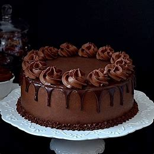
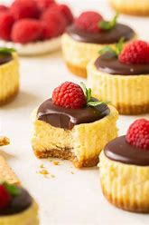
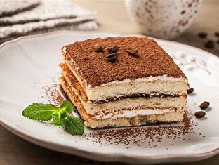
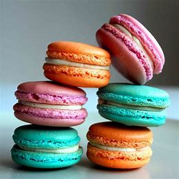

Chocolate Cake

Decadent chocolate cake with a smooth and rich frosting.
Chocolate Cake
Ingredients:
- Flour
- Cocoa powder
- Sugar
- Butter
- Eggs
- Vanilla extract
- Milk
Directions:
Mix all ingredients and bake at 350°F (175°C) for 30 minutes. Frost with chocolate icing.
Cheesecake

A smooth, creamy, and decadent dessert with a graham cracker crust.
Cheesecake
Ingredients:
- Cream cheese
- Sugar
- Eggs
- Graham crackers
- Butter
- Vanilla extract
Directions:
Mix cream cheese and sugar, add eggs and vanilla, and pour over the crust. Bake and refrigerate for several hours.
Tiramisu

Layered dessert with coffee-soaked ladyfingers, mascarpone cream, and cocoa powder.
Tiramisu
Ingredients:
- Ladyfingers
- Mascarpone cheese
- Egg yolks
- Sugar
- Espresso
- Cocoa powder
Directions:
Dip ladyfingers in espresso, layer with mascarpone mixture, and top with cocoa powder. Chill before serving.
Fruit Tart

A colorful and refreshing tart filled with creamy custard and topped with fresh fruits.
Fruit Tart
Ingredients:
- Pie crust
- Pastry cream
- Fresh fruits (berries, kiwi, etc.)
- Gelatin (optional)
Directions:
Bake the crust, fill with pastry cream, and top with fresh fruits. Chill and serve.
Macarons

Delicate almond meringue cookies with a creamy filling.
Macarons
Ingredients:
- Almond flour
- Sugar
- Egg whites
- Butter
- Food coloring
Directions:
Whisk egg whites, fold in almond flour and sugar, pipe onto a baking sheet, and bake at low heat. Fill with buttercream.